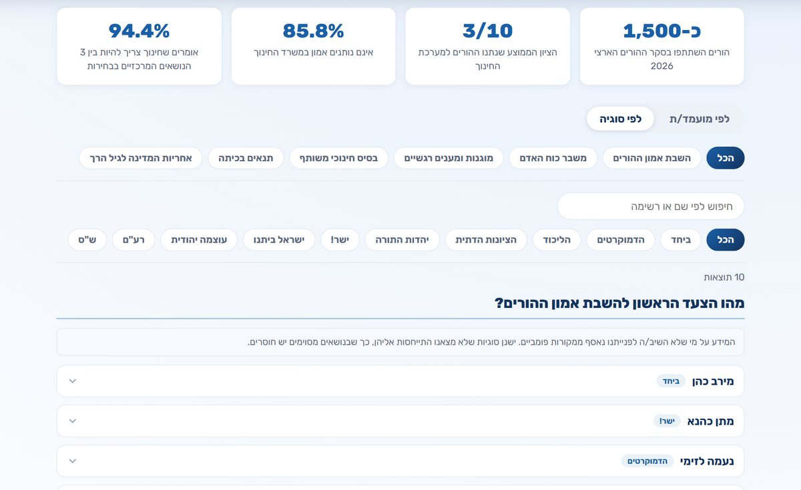
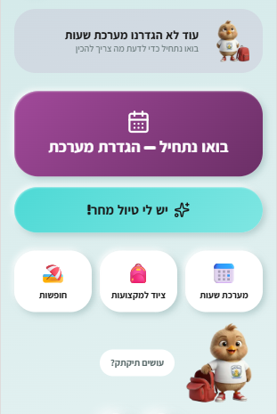
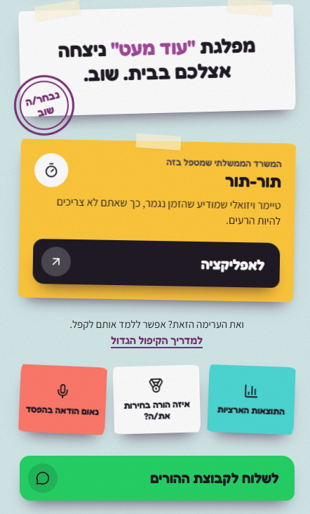
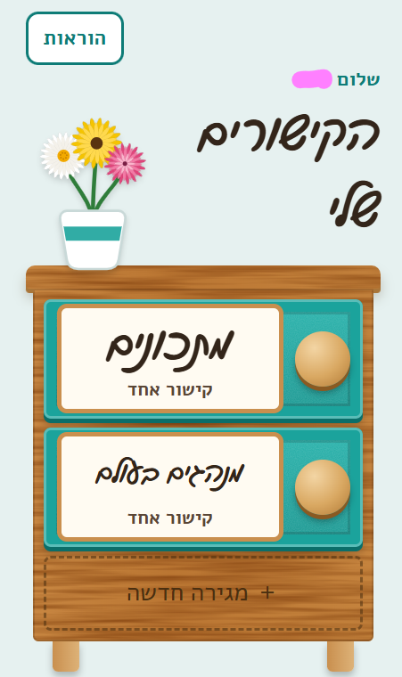
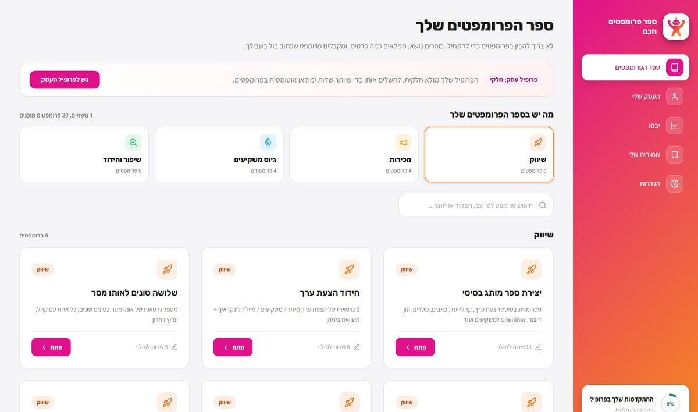
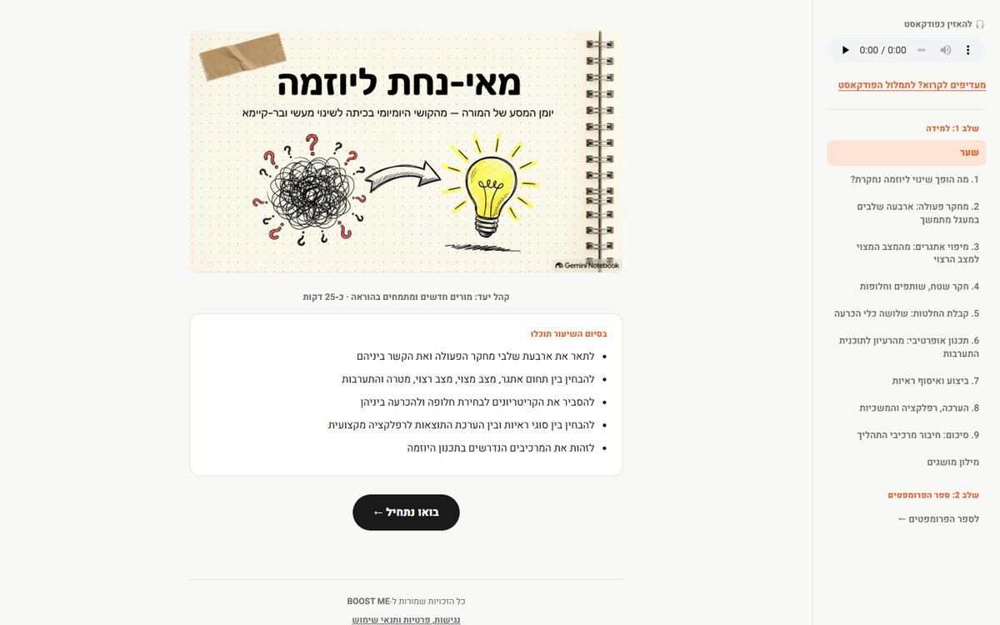
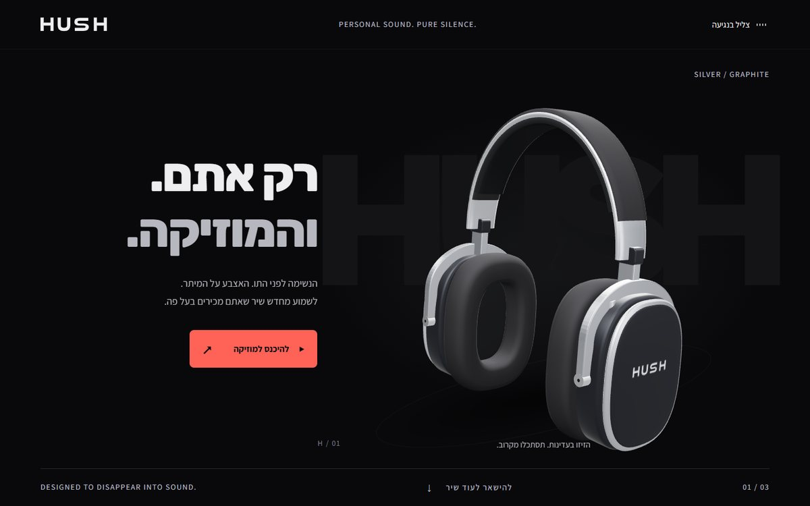
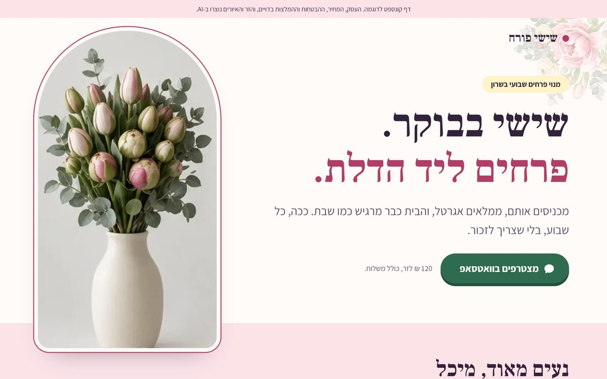

בוסט נחיתה
- קמפיין פוליטיבמקום Linktree עם עשרה קישורים, עמוד אחד עם פעולה אחת: להתפקד.
- קהילת הדרכותעמוד הרשמה שמכניס כל נרשם ישר לרשימת התפוצה.

כאב אחד. פתרון אחד.
סמנו כל שורה שמוכרת לכם. אנחנו נגיד איזה בוסט פותר את זה, ושיחת האבחון הראשונה עלינו.
ארבעה בוסטים, כל אחד לכאב אחר. סמנו, ונראה לכם איזה.
הצעה אחת, עמוד אחד, ומבקר שבסוף כותב לכם. מה בנינו
הכלים שלכם מתחילים לדבר, והמידע זורם לבד. מה בנינו
בוט שעונה מהמידע האמיתי שלכם, לא מנחש. מה בנינו
מבינים AI בלי לפחד ממנו: לצוות, לעסק, או אחד-על-אחד. מה העברנו
חינם, בלי התחייבות. מחיר רק כשברור מה באמת צריך.
בלי מצגות ארוכות ובלי "פתרון מקיף". מתחילים מהכאב, ובוחרים את הכלי הכי קטן שפותר אותו.
שיחה קצרה. מוצאות איתכם את הדבר האחד שבאמת תקוע.
הבוסט המדויק לכאב, לא הגדול ביותר. לכל בוסט הצעת מחיר משלו.
אנחנו בונות. אתם ממשיכים לעבוד.
מקבלים כלי שעובד, ויודעים להשתמש בו עד הסוף.
ואם בשיחה יתברר שלא צריך כלי חדש, נגיד לכם את זה. לפעמים התשובה היא שיעור קצר על משהו שכבר יש לכם.
דברים שבנינו, לפי סוג העסק. בלי שמות, כי זה לא שלנו לספר. כל הצילומים אמיתיים.

ואם משהו נכשל בדרך: מגיעה התראה מיד, במקום תקלה שקטה.





בדיוק העיצוב הזה, עם הטקסטים והתמונות שלכם. כל עמוד נמכר פעם אחת, אז הוא יהיה רק שלכם.

מותג אוזניות שלא קיים, עם מוצר בתלת-ממד שהוא חלק מהעמוד. מתאים למותג אוזניות או אודיו. לראות את העמוד

מנוי זר שבועי שלא קיים, עם זר שנפתח תוך כדי גלילה והוא חלק מהעמוד. מתאים לחנות פרחים. לראות את העמוד
עמוד מוכן נמכר כמו שהוא. עמוד כזה נבנה מאפס, עם הצעת מחיר משלו.
לשיחה על עמוד בוואטסאפ, נפתח בחלון חדששינויים מבניים, אוטומציות וסליקה בעמוד מוכן הם תוספת בתשלום.
עבדתי בשני מקומות שקנו מערכות AI גדולות ויקרות. בשניהם השתמשו בערך בעשירית מהן. לא כי הן היו גרועות, כי הן היו גדולות מדי לבעיה האמיתית.
נפלתי בזה גם בעצמי: פרויקט שנכנסתי אליו בהתלהבות, נגרר, ונכשל. מאז השאלה הראשונה שלנו היא לא "כמה גדול לבנות", אלא "מה הכלי הנכון". ברוב המקרים התשובה קטנה בהרבה.
ניסינו המון כלים, כדי שלכם לא יהיה צורך.
גל והדס, BOOST ME
ה-10% הם מהניסיון האישי שלנו, לא סקר.
כלים והסברים שבנינו ומחלקות בחינם. הם גם הדרך הכי טובה לראות איך אנחנו חושבות.
ויש עוד ביד: אודיט לדף נחיתה או לבוט קיים, אפליקציות (CRM, דשבורדים, טיפול בלידים), הקמת מדידה (GTM, GA4, Clarity), מיצוב ומותג, שאלונים אינטראקטיביים, תוכן וקופי לקמפיינים, ואסטרטגיית SEO / AEO / GEO.
גם זה אבחון. כתבו לנו מה מעצבן אתכם השבוע, ונמצא יחד את הדבר האחד.
לשיחת אבחון בוואטסאפ, נפתח בחלון חדש